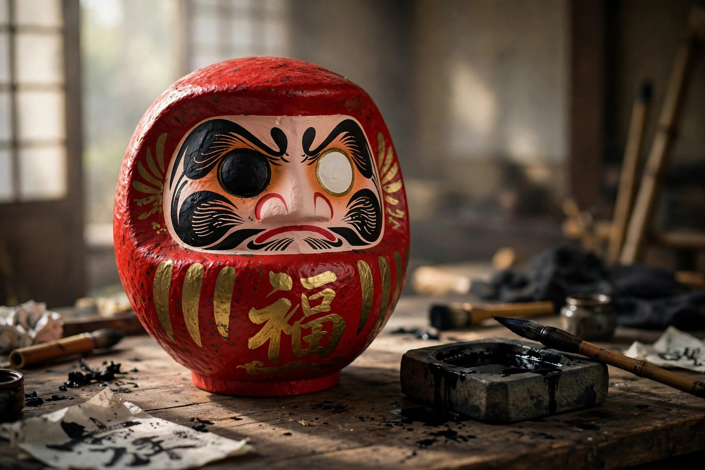

必勝だるまとは ― 選挙とスポーツに根づいた目入れの風習

この記事の結論
必勝だるまは、腹に「必勝」の文字を大きく書いただるまです。選挙では「出陣のときに左目、当選したら右目」という二段構えの目入れが、結果を目に見える形にする演出として定着しました。倒れても起き上がるだるまの性質そのものが「勝負に臨む姿勢」の象徴であり、選挙以外でも、スポーツの必勝祈願や大きな挑戦への激励に使われます。
必勝だるまとは
通常のだるまは、腹に「福入」などの縁起文字が入りますが、必勝だるまはその文字が「必勝」に置き換わったものです。願いの対象がはっきりしている分、置いた場所の空気を引き締める力があります。選挙事務所、道場や部の部室、大会に臨むチームの控室など、「ここから勝負が始まる」という場所に置かれるのが典型です。
なぜ、勝負ごとにだるまなのか
理由はだるまの成り立ちにあります。モデルの達磨大師は、壁に向かって9年間座禅を続けたという伝説の持ち主です（詳しくは達磨大師とは）。折れない持続力の象徴であること。そして本体は、底におもりを持つ起き上がり小法師の構造で、倒しても起き上がります。「七転び八起き」という言葉と結びつき、負けても立ち直る姿勢そのものが、勝負の祈願に重ねられてきました。
選挙と必勝だるま ― 目入れが「見える化」した
片目ずつ目を入れる風習自体は、江戸時代の文化年間ごろに始まったとされます。それが選挙と結びついて全国に広がったのは、テレビの普及した昭和のことです。出陣式や事務所開きで候補者が最初の目（左目）を入れ、当選が確実になった夜に万歳とともに残りの目（右目）を入れる。この一連の流れが映像として繰り返し伝えられ、「当選＝だるまの両目がそろう」という図式が定着しました。
- 出陣の目入れ：挑戦の宣言。陣営の気持ちをひとつにする場面でもあります
- 当選の目入れ：結果の報告。両目がそろった姿が、そのまま「成就」の証明になります
- 選挙だるまの産地：現代の選挙で使われるだるまのほとんどは高崎で生産されているとされ、選挙シーズンには産地の工房も注文が集中します（年末年始のだるまの記事でも繁忙期として触れています）
なお、必勝だるまそのものは、1955年の高崎市議会議員選挙の際に高崎のだるま職人が作ったのが始まり、と伝えられています。
選挙以外の「必勝」の場面
- スポーツ：大会前の必勝祈願、チームへの差し入れ。受験の合格祈願と並ぶ、定番の贈り先です（合格祈願だるまの贈り方）
- 仕事の勝負どころ：大きな商談、開業、プロジェクトの船出に。自社の事務所に置いて士気を保つ使い方もあります
- 個人の挑戦：資格試験、大会出場など。目入れの日を「始まりの日」として区切る使い方ができます
使うとき・贈るときの作法
基本の作法は通常の目入れと同じで、願いをかけるときに左目、成就したら右目を入れます（目入れの作法）。贈り物にする場合は白目のまま渡し、最初の目入れは受け取った本人の手に任せるのが基本です。サイズは置き場所で決めますが、事務所や式典など大勢の目に触れる場では、遠くからでも文字が読める大きめが選ばれます。号数の目安はサイズと号数ガイドをご覧ください。
※選挙運動に使う場合は、公職選挙法など関係するルールの確認が別途必要です。この記事は必勝だるまという縁起物の風習を紹介するもので、選挙運動の手引きではありません。
よくある質問
Q. 必勝だるまの目は、いつ・どう入れるのですか？
A. 挑戦の始まりに左目（向かって右）、勝利・達成のときに右目を入れて両目をそろえるのが一般的な流れです。
Q. 負けてしまった・達成できなかった場合、だるまはどうしますか？
A. 決まりはありません。片目のまま供養に出す方も、区切りとして両目を入れる方もいます。供養の方法はだるまの処分と供養の方法をご覧ください。
Q. 必勝だるまは誰かに贈ってもいいものですか？
A. 試合に臨むチームや大きな仕事に挑む人への激励として贈られます。白目のまま渡し、目入れは本人のタイミングに任せるのが基本です。
Q. 「必勝」以外の文字のだるまもありますか？
A. 「合格」「当選」「商売繁盛」など用途に応じた文字があり、名入れで名前やスローガンを入れることもできます。進め方はオリジナルだるま・名入れだるまの作り方と発注の流れで解説しています。
まとめ
必勝だるまの力は、願いを「見える形」にすることにあります。片目が入った姿は挑戦の途中であることを、両目がそろった姿は成就を、それぞれ静かに語ります。勝負の日が決まっているなら、その日を目入れの日として区切るところから始めてみてください。
激励・応援のだるまのご相談
チームや店舗への贈り物、文字や名入れの相談は、事業紹介をご覧のうえ、お問い合わせフォームからご連絡ください。選挙シーズンなど時期が重なる注文は、早めの相談が安心です。